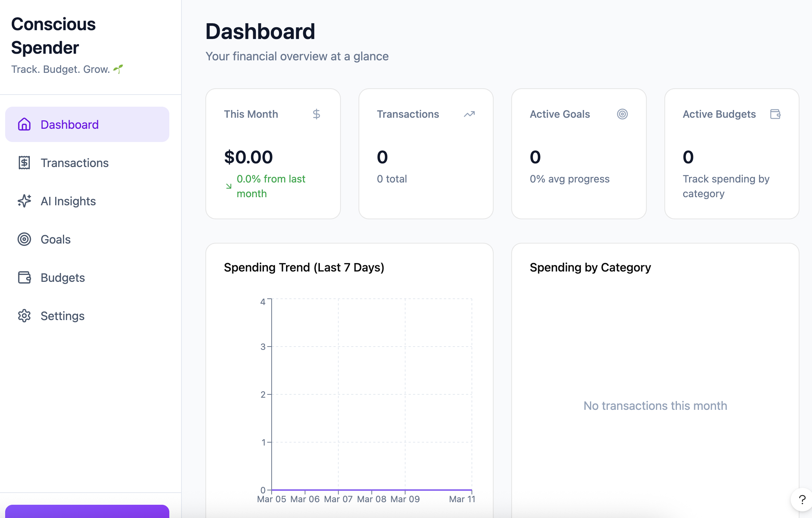
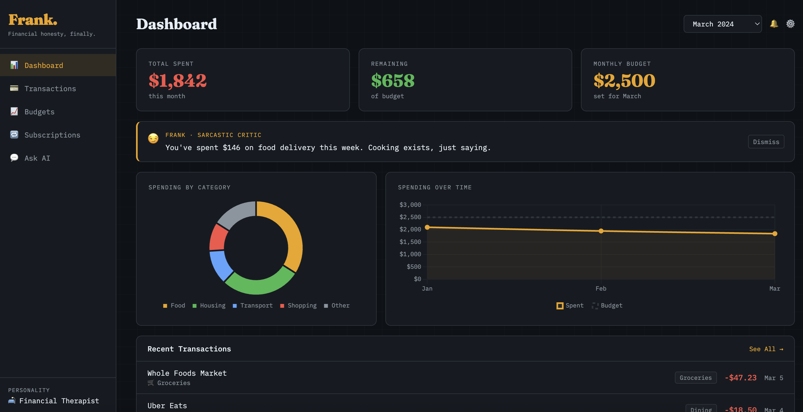
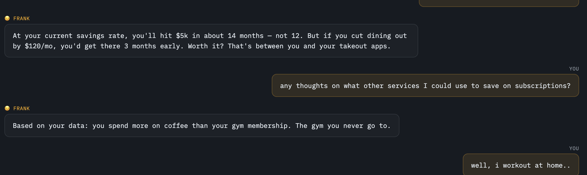
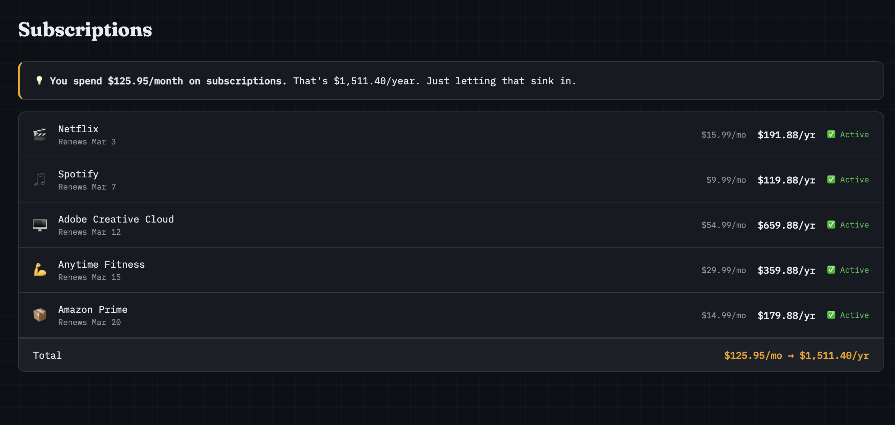
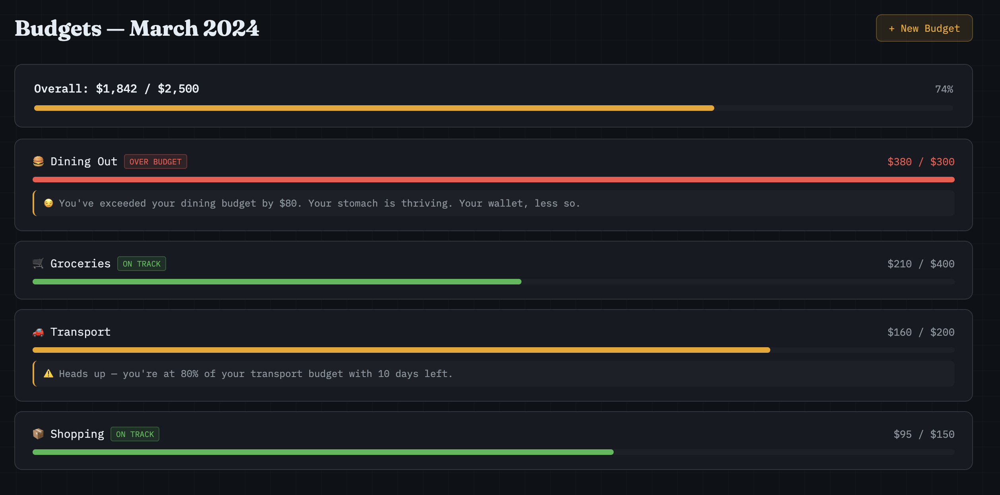

We attended Ryan Smith's workshop. He clearly has a ton of knowledge, but our main issue was that we hadn't developed our new idea far enough to follow along in the most efficient way.
We should have had a wireframe ready to start from, which put us at a disadvantage. Without time to flesh out the idea, we asked Figma to create a wireframe from a simple prompt about a fun spending tracker app. Because we hadn't really used Figma properly, it created a fully functioning prototype rather than a wireframe — not ideal when the session required starting from a strong design understanding.

We took what we could from the session, but it probably would have been more beneficial for teams further along in their development.
We continued brainstorming features for the spending tracker. In a shared document, we collected must-haves, features that will set us apart from other budgeting apps, and nice-to-haves. We also categorized everything by feasibility — what can be included for the pitch and prototype, and what will need to be future development.
Out of curiosity we asked ChatGPT for its thoughts on our feature list, and it came back with an 11-page essay. The main takeaways were that we should focus on one of three main aspects of the product, and limit the "smart" AI features for the prototype as they are too complex to achieve in a short time frame. Overall we seemed to be on a decent track. Surprisingly a lot of food for thought.
We followed Ryan Smith's instructions about using a lovable-style design notebook as the basis for all of Claude's work on the prototype. One of our key differentiating features is the AI buddy that talks to you in a sassy, direct, sarcastic, hard-home-truths kind of way — ideally the user decides how much of that they want.
With a more fleshed-out feature list, Claude created a bunch of fun things including a name for the AI buddy (Frank — fitting to the idea, though we're not sure we'll stick with it). It tried its best to get the sassy tone right, but it was a little hit and miss. It also created fake transactions to build things out, which was interesting to see. Persistent memory and logic in the chat are still issues, so there's more work to do. It was extremely fun seeing where it took the idea though.



